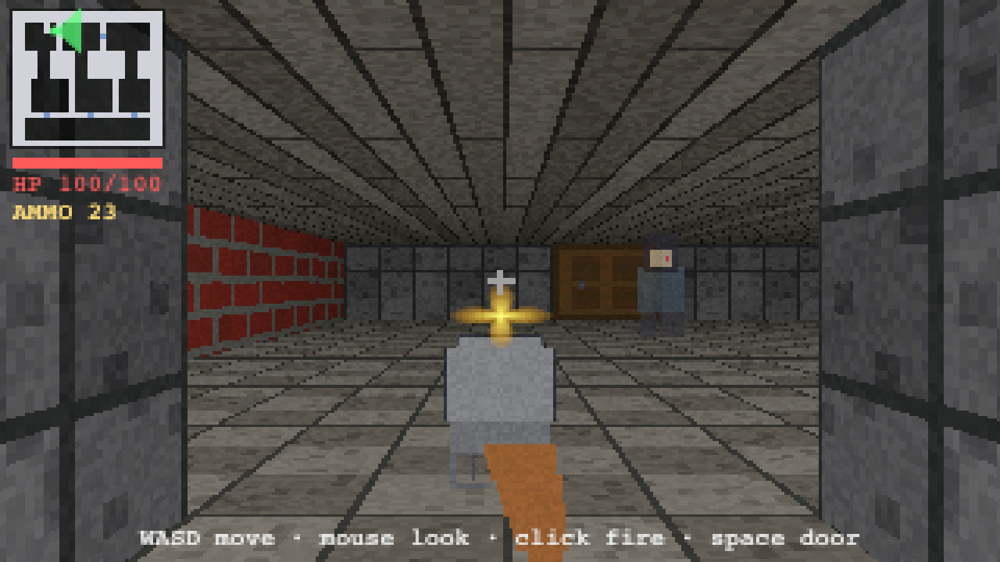

19 November 2026 · Agentic task loop · first-person raycaster
Raycaster Shooter · Qwen 3.8 27B pi-adapted · Splash 1.7.0 · Tenaz 0.8.0 + Pi · run 1
Tenaz ended in COMPLETE after 3 h 17 min (47 min of it lost to a blocked runner), 41 sessions and 13 tasks; the first final review accepted. Played by Claude in headless Chromium: all eight Must have items pass, but a stone wall hides the spawn door from the spawn view, enemies never attack, there is no end screen and the gun and corpse are crude.

What was checked
- Runner final state COMPLETE on 19 November 11:46:31.42 UTC: 13 tasks done, none pending. Bootstrap passed each of its three steps on the first attempt (13 tasks, 26 requirements). Final review cycle 1 returned ACCEPT with verify passing and 26 requirements covered, one (R26) by hand. These are the model-written checks and reviews, not a hidden acceptance suite. `verify --all` passed 25 of 25 checks again after the run.
- Configuration: Tenaz 0.8.0 (2f16791), the release build, initialized with --harness pi, --vision, --thinking off, --set temperature=0.8 and a generic engine; all other parameters at their defaults; sandbox off. Pi 1.4.0 with openai-completions. No edits to model-written code, notes, checks, task cards or run.json.
- Operator action 1: the first launch stopped at the engine preflight with 'no reasoning at the configured level'. Tenaz 0.8.0 asks for reasoning even when the run's thinking is off; cache, tools and vision passed. Relaunched 19 s later with --resume --allow-weak-engine. That second preflight, accepted weak, recorded tools=false and vision=false: the model answered both probes in 2-4 tokens without calling a tool. Sessions after it used tools normally.
- Incident: at 09:39:38 UTC, in T009's builder session 021 (turn 34), everything under the project's .tenaz/private/ was deleted, including Pi's models.json and the transcripts, prompts and per-request records of sessions 001-021; Splash was healthy. Most likely a shell command of the model; the transcript that would show it was deleted too. Sessions 022-027 each failed within a second with Pi's 'model not found'; Tenaz took that for an engine error, waited through six retries and blocked at 10:24:43 with 'engine unavailable'. Operator action 2: --resume at 10:26:38, which rewrote Pi's agent directory; T009 restarted at 10:26:42. About 47 min were lost.
- Runner events: 028-builder-T009 was stopped by Tenaz's loop guard (the same bash call five times); attempt 2 passed. T009's first review returned CHANGES; every other task review returned ACCEPT. Two replans added no tasks.
- Played on 19 November by Claude with Playwright in headless Chromium against the production build, with real keyboard and mouse input. Headless Chromium grants no pointer lock, so the page was made to report the canvas as locked and the game's own handlers ran; mouse turns came from mousemove movementX. The debug hook was read for positions and enemy state, and used once to aim at the enemy for the shooting test.
- Must have results: about 3 cells/s with collision at walls (stops 0.2 cells from a wall); strafe both ways; mouse turning; straight walls; brick, stone and wood wall textures plus a wooden door; textured floor and ceiling; side and distance shading visible, not measured; the barrel cut off by a wall edge in the spawn view; the closed door blocks, Space opens it onto a room with an enemy; left click fires with a muzzle flash and ammo count, the hit enemy flashes red and falls on the third hit and stays down.
- Faults found in play: from the spawn a stone protrusion at (5,3) stands 1.5 cells ahead and hides the door, so the brief's closed door 4 cells ahead is not in view (the model's spawn check tests the map cell only, and T013's screenshot review read spawn.png and did not flag it); enemies walk to the player but never attack, health stays at 100; no win or end screen; the gun is a grey block on a brown stick and the fallen enemy a brown block.
- Vision: initialized with --vision and the engine served the image tower; no image refusals in the session records. After the resume the model read eight different screenshots, including its own spawn, turn and door captures; reads before the incident are not countable because those transcripts were deleted.
- Engine metrics: the run's Splash log was dedicated to it (fresh process, port used only by this run). Its 534 request summaries are the 10 preflight requests plus 524 run requests. Grouped by each session's start and end time, the Splash summaries' totals of prompt, output and cached tokens equal the Pi usage that Tenaz journaled for every one of the 41 sessions; no summary falls in two sessions. Proxy records survive only after the resume: 229 of 231 match Splash summaries one-to-one and in order by the (prompt, output, cached) triple; the other two are client-side errors with no engine summary (021's last request and 028's stopped one).
- Public artifact: the reviewed static build (vite build --base ./ from the final project commit 1490ae3, unchanged source) and one capture from it at 1280x720. The prompt is the author's and is not republished; the project, raw logs, journal and sessions stay in the ignored local archive.
Limits of this evidence
Completion is the runner outcome. Compared with the Raycaster runs before it, this one changes model checkpoint (the pi-adapted fine-tune of Qwen 3.8 27B), engine (Splash 1.7.0), harness (Pi instead of DeepSeek Harness), runner (Tenaz 0.8.0), thinking (off) and temperature (0.8) at once, as a test of a whole setup rather than of one setting. It is a single execution. The playthrough was by Claude, with pointer lock simulated.
Configuration
The model, serving engine and agent used for this execution.
| Field | Value | Detail |
|---|---|---|
| Model · primary | Qwen 3.8 27B pi-adapted · primary · reasoning none (thinking off, as the adapter's model card advises) | OptiQ mixed precision: MLX affine 4-bit, group size 64, with 8-bit layers; vision tower in a bfloat16 sidecar |
| Checkpoint · primary | mlx-community/Qwen3.8-27B-pi-adapted-OptiQ-4bit | primary model artifact · revision fc7fd70ffc6b661ad308e31643b74a49e69b049c |
| Model · drafter | Qwen 3.8 27B DFlash2 · drafter | — |
| Checkpoint · drafter | incoai/Qwen3.8-27B-DFlash2 | drafter model artifact · revision 015e795645c74b1a0eeef3b570031fb62e769bc5 |
| Runtime | Splash 1.7.0 · One splash serve process for the whole run, registered with Tenaz as a generic engine (start and stop scripts; never restarted). --model-dir on the local MLX folder, --max-context 128K, --reasoning-effort none (every request served with thinking off), --idle-release off, SSD prefix cache at its default quota, Neural Engine FFN split at share 0.35 from an earlier calibration, vision loaded. Temperature 0.8 pinned through the Tenaz proxy; top-p left to the engine. mode | inference engine and exact build |
| Harness | Pi coding agent over RPC driven by Tenaz 0.8.0 (2f16791) 1.4.0 | the agent or client that drove the run |
| Runner | Tenaz 0.8.0 · release build 2f16791 | open-source runner, github.com/aartiles/tenaz · how the runner evolved |
| Hardware | Apple MacBook Pro · 64 GB unified memory | hardware recorded for this execution |
| Workload | Raycaster Shooter · revision 1 | One-shot raycaster brief by @ddalcu, as posted by @Beamsters1, used verbatim as the Tenaz brief (same SHA-256 as every earlier Raycaster run); Tenaz's local model wrote its own spec, verify and task plan. Two operator relaunches, no edits. A single execution, not a repeated measurement. |
| Context window | 131,072 tokens | maximum context configured for the serving runtime |
| Repetitions | 1 | executions recorded for this workload; one means an indicative result, not an estimate |
Inference measurements
Engine-side rates for this run. Each figure states its own statistic; figures from different runs are not interchangeable.
| Metric | Value | Definition |
|---|---|---|
| TTFT · median | 0.501123 s | Median engine-reported TTFT ('TTFT of request' lines, millisecond precision) across the 524 run requests. · n=524 · Mean 2.262 s. Includes the run's cache mix; not a prefill rate. |
| Decode · per-request median | 52.1 tok/s | Median of Splash's per-request decode rate across the 524 run requests. · n=524 |
| Decode · output-weighted | 46.6016 tok/s | Total output tokens divided by the sum of each request's output tokens over its decode rate. · n=524 |
| Tokens per decode cycle · drafter | 5.3602 tokens/cycle | Output-token-weighted mean of Splash's tokens per decode cycle with the DFlash2 drafter (median 5.2). · n=524 · Splash logs tokens per cycle, not drafted and accepted counts, so this is not an acceptance percentage and is not comparable with MTP acceptance. |
| Swapped in during the run | 0.91 GiB | Sum of per-session swap-in from Tenaz's 30-second host memory samples, taken during sessions; host-wide swap I/O, not resident memory. · n=327 · Memory pressure reached the warning level (2) in at least one sample. Tenaz sampled Splash's Python parent process, not its engine, so no engine footprint is recorded. |
Agent session counters
Agent-wide usage totals. These include reasoning, tool calls and waiting, and are not model decode speed.
| Metric | Value | Definition |
|---|---|---|
| Run elapsed | 196.8 min | Session 001 start after the preflight (19 November 08:29:43.482 UTC) to COMPLETE (11:46:31.420 UTC); includes tools, checks, the blocked interval and its retries. · n=1 · 3 h 16 min 47.9 s. From 09:39:38 (021 fails) to 10:26:42 (028 starts) the runner made no progress: about 47 min. |
| Agent sessions | 41 sessions | All harness sessions: 3 bootstrap, 21 builder, 14 reviewer, 2 replan and 1 final reviewer. · n=1 · Six of the builder sessions (022-027) never reached the engine. |
| Sessions ended early | 8 sessions | Sessions with ok=false: 021 (its directory deleted mid-session), 022-027 (Pi could not find its model config), 028 (stopped by the loop guard). · n=41 |
| Operator interventions | 2 actions | Relaunch with --resume --allow-weak-engine after the preflight stop; --resume after the block. No configuration changes or edits. · n=1 |
| Model responses | 526 responses | All requests Tenaz journaled across sessions: 524 with an engine summary and 2 client-side errors. · n=1 |
| Matched model requests | 524 requests | Splash summaries assigned to a session by time window, with each session's prompt, output and cached totals equal to its journaled Pi usage; 229 of them, after the resume, also matched one-to-one to proxy records. · n=41 · Per-request proxy records for sessions 001-021 were deleted in the incident; their engine summaries are matched by session totals only. 10 preflight summaries are unassigned and excluded. |
| Tool calls | 611 calls | Sum of harness tool_calls across all 41 session records. · n=41 |
| Context compactions | 0 compactions | Compaction count across all session records. · n=41 |
Context and token counters
Token totals as reported by the harness or engine. Cached and cumulative figures are not additive with fresh input.
| Metric | Value | Definition |
|---|---|---|
| Maximum prompt context | 94,762 tokens | Maximum prompt input across the 524 engine summaries; not the configured server window. · n=524 |
| Cumulative input | 15,119,209 tokens | Sum of total prompt tokens across the 524 engine summaries, including repeatedly reused context; not unique input. · n=524 |
| Cached input | 14,555,360 tokens | Sum of prompt tokens Splash reported cached. · n=524 |
| Fresh input | 563,849 tokens | Total prompt input minus cached input. · n=524 |
| Output tokens | 347,628 tokens | Sum of output tokens across the 524 engine summaries; thinking was off, so no reasoning output. · n=524 |
| of which reasoning output | 0 tokens | Reasoning tokens journaled across sessions; Splash served every request with thinking off. · n=41 |
| Prompt-cache token share | 96.2706 % | Cached prompt tokens divided by total prompt tokens, weighted by tokens across the 524 engine summaries. · n=524 |
Recorded check counters
Counts from the checks recorded with this run.
| Metric | Value | Definition |
|---|---|---|
| Tasks completed | 13 tasks | Final task cards marked done; none active, todo or blocked. · n=1 |
| Reviews returning changes | 1 reviews | Task review verdicts returning CHANGES (T009, first attempt); the other 13 task reviews returned ACCEPT. The single final review returned ACCEPT. · n=14 |
| Project checks passing | 25 checks | Checks passing in `verify --all` rerun after COMPLETE; the final reviewer returned ACCEPT with verify passing. · n=1 · Model-written checks, not an independent acceptance suite. |
Request records & provenance
524 numeric request records in Splash log order, the run's requests only (the 10 preflight summaries are excluded). Each falls inside one session's time window, and per session the records' prompt, output and cached totals equal the Pi usage Tenaz journaled. The 229 after the resume also match proxy records one-to-one. TTFT and decode come from Splash's own timing lines. No prompts, tool results, session identifiers or local paths are included.
Run ID: 2026-11-19-qwen38-27b-pi-adapted-optiq4-splash-v170-tenaz-080-pi-raycaster-shooter
One execution, with checks transcribed from the retained record. A completed session is not a quality score. Measurement method · All runs